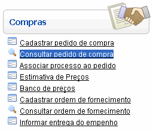
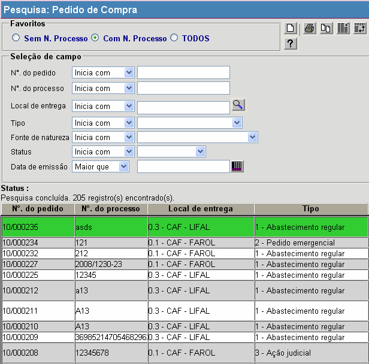

Consultar Pedido de Compra [ Voltar ]Utilize esta tela para localizar e abrir pedidos de compra cadastrados. O formulário "Consultar pedido de compra" encontra-se dentro do menu "Compras". 
Ao clicar no formulário, o sistema exibirá a seguinte tela: 
1º Passo: configure o filtro de pesquisa para localizar o pedido desejado. O filtro disponível para esta pesquisa é o "N°. do pedido". Digite neste campo os caracteres iniciais do código do pedido. Assim, serão retornados na pesquisa os pedidos cujos códigos se iniciam com o conteúdo digitado. Em seguida, selecione com um clique o pedido de compra desejado para abri-lo na tela "Pedido de Compra". |